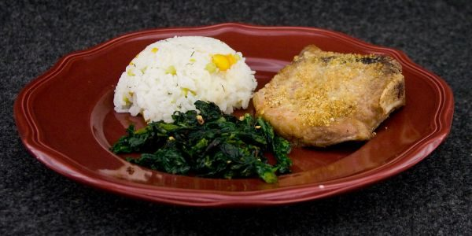

Breaded Baked Pork Chops
Makes 6 servings

Photo: Social Geek (CC BY 2.0)
Oven-baked pork chops soaked in an egg-white and evaporated-milk mixture, then coated in a spiced cornflake-and-bread-crumb crust.
Directions
- Trim all feta from chops. Beat egg white with evaporated milk. Place cops in milk mixture and let stand for 5 minutes, tuning chops once.
- Meanwhile, mix together cornflake crumbs, spices, and salt. Spray a 9 x 13 in baking pan with nonstick spray. Remove chops from milk mixture. Coat thoroughly with crumb mixture,
- Place chops in baking dish and bake at 375 degrees for 20 minutes. Turn chops and bake 15 minutes longer or until no longer pink. Makes 6 servings.
- Trim all fat from the chops.
- Beat the egg white with the evaporated milk. Place the chops in the milk mixture and let stand for 5 minutes, turning the chops once.
- Meanwhile, mix together the cornflake crumbs, bread crumbs, paprika, oregano, chili powder, garlic powder, black pepper, cayenne pepper, dry mustard, and salt.
- Spray a 9 x 13 inch baking pan with nonstick cooking spray.
- Remove the chops from the milk mixture and coat thoroughly with the crumb mixture.
- Place the chops in the baking dish and bake at 375 degrees for 20 minutes. Turn the chops and bake 15 minutes longer, or until no longer pink. Makes 6 servings.
Goes well with
https://baron-3dl.github.io/normans-kitchen/recipe/breaded-baked-pork-chops.html